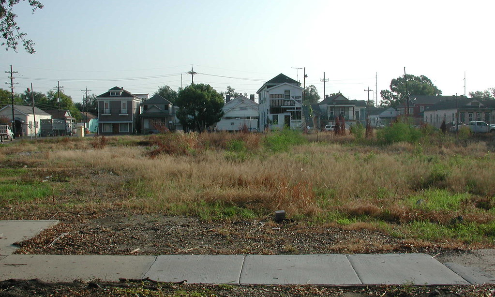

The US came within reach of public childcare. Twice.
"These children are future citizens, and if they are neglected in these early years it will hurt not only the children themselves, but the community as a whole. Where state help is needed, it should be given; and when states are incapable of giving sufficient help, it should be forthcoming on a national scale." Eleanor Roosevelt, September 8, 1945, as WWII childcare centers were closing across the country
During World War II, the federal government built public childcare centers so that mothers could work in shipyards and factories. It was, as the economist Claudia Goldin noted, "a national, practically universal, federally funded preschool program. It is, to this day, the only one." When the war ended, the centers closed. The program had been built for the war effort, not for families — and nothing replaced it.
In 1971, Congress passed the Comprehensive Child Development Act, a bipartisan bill to establish universal childcare. President Nixon vetoed it. His speechwriter, Pat Buchanan, drafted a message warning against "the vast moral authority of the National Government" being committed "to the side of communal approaches to child rearing over against the family-centered approach."
Not all countries failed
The Nordic countries — Denmark, Finland, Norway, and Sweden — built their systems through political contest, not consensus. In 1934, Swedish social scientists Alva and Gunnar Myrdal argued for sharing the responsibility of child-rearing between families and society. It took forty years of organizing — by labor unions, by women's movements, by social democratic parties — before Sweden passed its National Preschool Act in 1975.
Each country took its own path. Finland guaranteed every child a legal right to public care from infancy. Denmark and Norway built comparable systems. Today, between 65% and 80% of young children in every Nordic country are enrolled in public childcare. Those systems survived because they worked, and because the people who depended on them organized to protect them.
The Nordic countries have public childcare systems. The United States does not. The childcare gap between them is enormous.
US–Nordic Childcare Gap at a Glance
| United States | Nordics | |
|---|---|---|
| Childcare cost to families | $15K/yr | $0-4K/yr |
| Public childcare and pre-K enrollment | 10% | 73% |
| Childcare worker pay | Near poverty | Livable |
| Public childcare and pre-K spending | <0.3% of GDP | 1.3% of GDP |
| Adults out of work for childcare | 3.8% | ~0.5% |
The four Nordic countries all follow the same basic model: public, universal childcare funded through taxes. The details vary. The overall results do not. By contrast, UNICEF ranks the United States 40th out of 41 wealthy countries on childcare. This report examines the gap: where it comes from, what it costs, and what it would take to close it.
The comparison extends beyond national averages. Where the data allows, the analysis includes US states, New York City, and the Canadian provinces. The childcare gap persists in every US state, including the wealthiest — and a vicious cycle of underfunding makes it self-reinforcing.
The money is there. The system is not.
The most common defense of the US childcare gap is that the country can't afford to do what the Nordics do. This section eliminates that explanation. The US has comparable resources per child. It has a comparable share of young children in its population. The gap between the US and Nordic childcare systems is not a gap in resources. It is a gap in what those resources are spent on.
The money is there
The US is not too poor to fund childcare. One way to see this is Gross Domestic Product per young child — the annual economic activity of an area divided by its number of young children. GDP per young child serves as a rough measure of the financial resources available in a society for each child it needs to support.
Global average GDP per young child is $190,000. The US generates $1.28 million — nearly seven times the global average. Denmark generates $1.23 million. Finland generates $1.05 million. Massachusetts, at $1.86 million, has more than double the per child resources of Sweden.
The differences in material resources between the US, Canada, and Nordic countries are relatively small. A much bigger gap exists between wealthy societies and the rest of the world. Likewise, a bigger gap exists within each of these places, in how resources are distributed. The important takeaway is that national and state-level resources per child are abundant. Nordic countries on the lower end of the GDP per young child measure have built high-quality public childcare systems without creating financial hardship.
And the need for public childcare is there
The need for affordable childcare is the same everywhere. The US has roughly the same share of young children as the Nordics — between 5% and 7% of the total population. The difference is what happens to them before age 5.
Young children in every country need full-time supervision — someone feeds them, watches them, teaches them, every day, for years. Whether the public sector offers childcare or not, the need for affordable childcare is universal.
In the US, the government funds education from kindergarten through high school — thirteen years of free public school. Before kindergarten, families pay for expensive childcare out of pocket, or a parent leaves work, or a grandparent fills in. Some public programs cover part of the gap for some children, but most families are on their own. Other wealthy countries solved childcare the same way the US solved K-12: by viewing it as a universal public service.
The clearest difference between the US private childcare system and Nordic public childcare systems is what families pay. The calculator below compares childcare costs for a family in Sweden, where the public sector caps the price of care for young children, and a family in the United States.
How Sweden prices childcare
In Sweden, parents drop their children off at a public daycare in their neighborhood and pay a fee based on their income (maxtaxa) — 3% for the first child, 2% for the second, 1% for the third, and nothing after that. The fee is capped, so no family pays more than about $2,100 a year per child regardless of income.
In the US, a family earning $40,000 pays the same price as a family earning $400,000.
What would your family pay? Adjust your income and number of children to compare childcare costs in Sweden and the US.
Some US families receive partial subsidies through Head Start or state programs. Most do not.
But US public childcare funding is not there
If resources are abundant and the need is the same, the gap must come from funding decisions. It does. The US runs nearly its entire childcare system through the private market. The Nordic countries run theirs through the public sector. The US spends 0.3% of GDP on public childcare and early education for children under 5 — about 50 cents per American per day. The Nordic countries spend around 1.3% of GDP. The entire gap between bottom-ranked US childcare and top-ranked Nordic systems boils down to one percent of GDP.
When compared to Nordic countries, the US has a weaker public sector overall. But the childcare funding gap is disproportionate even by that standard. Denmark funds childcare at 1.2% of GDP. Finland at 1.3%. Norway at 1.2%. Sweden at 1.5%. Vermont, the US state that funds childcare the most, directs 0.55% — less than half of any Nordic country. US public funding for childcare is simply not there.
So the services and infrastructure do not exist
Public funding creates public slots. Public slots create enrollment. This is not complicated. Countries that fund childcare have near-universal enrollment. The US, which funds almost nothing, enrolls almost no one.
Nordic countries enroll children starting at age 1, when parental leave ends. By age 3, enrollment exceeds 80% in every Nordic country. In the United States, public care for children begins in earnest at age 5 with kindergarten. Before that, some states offer preschool for age 4, though coverage and hours vary widely. A few areas in the US are trying to push further to cover younger children. Otherwise, US families are mostly on their own.
Public programs — mainly Early Head Start and federal childcare vouchers — reach roughly 3% to 7% of children under 3. In Norway, public enrollment at the same ages exceeds 75%.
Families would enroll their children if the slots existed. Low enrollment reflects a physical absence. Even if Congress appropriated the money tomorrow, the buildings, the trained workers, and the licensed slots to serve every family do not exist. The US has no childcare infrastructure for most children, in the same literal sense that a city with no airport has no aviation infrastructure.

Empty lotThe empty lot in the illustration above tells the whole story. Pat Buchanan later reflected on killing the 1971 childcare bill:
"If we hadn't stopped it, I think you'd have an entitlement program now of enormous size with these federal day care centers, and they would be growing and growing and growing once you got it on the books." Patrick Buchanan, NPR interview
Buchanan was afraid the program would work — that families would use it, depend on it, and defend it at the ballot box. That is exactly what happened in every country that built one.
The US–Nordic childcare gap persists at the state level
If the gap were explained by the US being too big or too diverse, it should disappear when you look at individual states. It does not. No US state — not Massachusetts, not Minnesota, not California — has built childcare infrastructure comparable to any Nordic country. The map below compares funding, enrollment, wages, and workforce outcomes at the state level. The gap persists everywhere.
The gap persists in every state because no state has built the infrastructure to close it. The next section traces what that costs — for families, for workers, and for the businesses trying to hire them.
A system designed to fail
The previous section established that the US childcare gap is not caused by lack of resources, demographics, or state-level variation. It is a funding decision, and that decision has consequences. This section traces what happens downstream: which choices families actually face, who leaves the workforce, who falls into poverty, and why the system resists repair.
To see which system offers more freedom, compare the experiences of a parent of a young child in the US and in Finland.
A tale of two systems
You have a child under 5. If you live in the United States, you choose between private childcare at about $15,000 per year or one parent leaves the workforce. If you live in Finland, you choose between public childcare at $0-4,080 per year or a home care allowance of ~$5,000 per year paid to the parent. Same situation. Radically different options.
Finland grants every child a legal right to public early childhood education and care from infancy. The home care allowance is an option layered on top of a complete public childcare system. Both options are funded. Both options are real.
In any society, some parents will prefer to care for their children at home. Finland gives them freedom to pursue that option — and lets them move between home care and public daycare as needs change. Staying home to care for a young child means lost income, so the allowance replaces part of the lost income, preventing poverty.
In the United States, Head Start offers part-day preschool to some low-income children. Scattered state pre-K programs cover some four-year-olds for a few hours during the school year. For most families, the only option for outside care is the private market.
The apparent freedom of the private market is a constraint in disguise. Families pay rates that can total $150,000 for two children before kindergarten — if they can afford it at all. Families who can't afford it piece together informal arrangements, or a parent — usually the mother — leaves paid work. That is not choice. It is the daily emergency resulting from the national removal of viable choices.
The cost to families
The economics are straightforward. Full-time childcare costs about $15,000 per child. At a household income of $200,000, that is steep but manageable. At $40,000, it is more than a third of everything the family makes before taxes. For a family with two children, that is $30,000 a year — close to the full take-home pay of a worker earning $20 an hour.
Families respond in three ways: they pay and absorb the cost for years — often at the expense of savings, retirement, or housing. They rely on grandparents and informal arrangements, shifting the burden to an older generation. Or a parent leaves work — overwhelmingly the mother.
3.8% of US working-age adults are out of the labor force for childcare (CPS, 2022). In the Nordic countries, the figure is under 1%. Nine in ten of these sidelined adults are women. Outside of recessions, more Americans are out of work for childcare than for unemployment.
The childcare gap pushes US families into poverty. Among mothers of young children who left work for caregiving, one in three lives in poverty. Among those who stayed employed full-time, the rate is under 10%. For single mothers of young children, the poverty rate reaches 40% (CPS ASEC, 2025). The pattern runs in one direction: no infrastructure forces women out of the workforce, and workforce exit pushes families into poverty.
Workforce exit and poverty are not separate problems. They are what happens when families have no public childcare — and the costs do not stop with families.
The cost to employers
Labor force participation for mothers with children under 6 is 68.3% — nearly ten points lower than for mothers whose youngest child is school-age. That gap closes when children reach kindergarten and free public education begins. Before that, 7.3 million working-age adults are out of the labor force for childcare, including 2.2 million with a bachelor's degree or higher. Employers competing for workers are drawing from a labor pool that is structurally smaller than it needs to be.
The cost is large. The Bipartisan Policy Center estimated the US economy loses $22–33 billion a year from gaps in the existing private childcare supply — families who want a slot and cannot find one nearby. ReadyNation put the broader cost, including lost earnings, lost productivity, and lost tax revenue, at $122 billion a year for infant and toddler care. These costs fall on employers as unfilled positions, turnover, and absenteeism. Some employers pay these costs directly, subsidizing or operating their own childcare to retain workers.
In the Nordic countries, public childcare removes this cost for every employer. The full working-age population is available to hire, and no business needs to solve childcare on its own. That is what shared infrastructure does. It replaces a cost that every business pays individually with a system that works for everyone.
The cost to workers
The US childcare system fails families who need care and employers who need workers. It also fails the people who provide the care.
A childcare worker in the US makes $15.41 an hour — less than a dogwalker, less than nearly every other occupation in the country. That wage does not cover childcare for the worker's own children.
In every Nordic country, childcare workers earn 65–75% of the typical wage and work as public employees with healthcare, a pension, paid vacation, and job security. In the US, most childcare workers have none of these. Once you add benefits, the gap is even wider — and it drives turnover. Nordic systems retain trained staff over years. US centers cycle through workers who leave for any job that pays a dollar more — because almost every job does.
The scale of the US–Nordic childcare worker pay gap, and the occupations that pay closest to childcare workers, vary by state and country.
US childcare workers are paid $15.41 per hour
US childcare workers make $15.41/hr
The typical childcare worker makes $15.41 per hour, or $32,050 a year. 99% of occupations pay more. An elementary school teacher at the school next door makes $62,340. That gap is not a market outcome. It is a policy choice about which work counts as professional.
An elementary school teacher's salary is modest, too. Neither wage reflects the value of the work. But there is a practical case for closing the gap: professional pay attracts trained workers, training improves quality, and quality matters most for the children with the fewest resources at home.
Without professional pay, here is the competition for childcare labor: the lowest-paid occupation in the US, a fast-food cook, makes only 6% less per hour. A dogwalker makes more. The diagram below shows the US occupations with wages most similar to childcare workers. These are the lowest-paying jobs in the country. The 742 occupations that pay more are not shown.
Peer occupations change by location. In some states, childcare workers are paid a poverty wage — half of what a typical worker makes. In every Nordic country, they are paid 65–75% of a typical wage. Use the table below to dig deeper.
Explore wage peers by state or country
Select a geography to see which occupations pay closest to childcare workers there.
Why the market can't fix it
The enrollment and poverty numbers above follow directly from the structure of the system, and the market cannot fix them.
Closing the enrollment gap means building a workforce that does not exist. The US employs less than 1% of its workers in childcare. Nordic countries employ between 2% and 5%. Matching Nordic enrollment would mean tripling or quadrupling the childcare workforce — recruiting hundreds of thousands of additional workers — and the current wage of $15.41 an hour cannot attract them. To build the slots, the US needs the workers. To get the workers, it needs professional wages. But higher wages raise the cost of care — and that is where the market breaks down.
Brown and Herbst documented the mechanism: a 10% minimum wage increase raises childcare prices 4–8%, compared to 0.4% at grocery stores — because labor is roughly 70% of childcare costs, and there is almost no margin to absorb it. You cannot raise childcare worker wages without making care unaffordable for parents — unless the government structures costs differently, the way the Nordics do.
The structural trap is simple: in most industries, you can raise wages by raising prices. In childcare, you cannot — because there is no public payer to absorb the difference. The families paying for care are at the earliest stage of their careers, facing the highest costs at the point in life when their earnings are lowest. Every other country that solved this problem solved it the same way: the government became the primary funder, set professional wages, and charged families a fraction of the cost. There is no private-market path from $15 an hour to a professional wage without making childcare unaffordable. The only question is whether the public sector steps in.
Both systems self-reinforce. The diagram below shows two feedback loops — a virtuous cycle in the Nordics and a vicious cycle in the US.
In Nordic countries, public investment creates a professional workforce, which produces quality care, which builds public trust, which sustains the investment. Even Finland's current right-wing government has kept childcare intact. Conservative, liberal, and socialist parents send their kids to the same daycares. Finland's childcare system is politically untouchable because it works and people depend on it.
In the United States, the feedback runs the other direction. Parents pay a lot. Workers are paid little. Both sides of the market are broken at the same time. Underfunding produces low wages, which cause turnover, which erodes quality, which erodes trust, which becomes the argument against investment.
The last time the US tried to break the cycle, the design of the fix revealed the problem. In 2021, the Build Back Better Act proposed improvements to the childcare system, including wage standards. The wage standards would have raised costs across the entire market, but subsidies were limited to lower-income families — so families just above the cutoff faced a $13,000 price increase. They would pay higher prices from the quality mandate, receive no subsidy, and pay taxes to fund the program for families below the line. That is the built-in flaw of income-restricted programs: raise quality, and the families who don't qualify pay more. Those families turn against the program.
Universal programs break this trap. The cost of childcare is small relative to the whole economy but enormous relative to a young family's budget. One percent of GDP, spread across the tax base, is barely noticeable. The same cost, concentrated on the families who need care right now, is $15,000 a child. The Nordic countries chose to spread it. The US chose to concentrate it.
Closing the gap
Political choices created the US childcare gap, and political choices can reverse it. No US jurisdiction has yet built a system comparable to what the Nordic countries have. But a few are trying — and what they have built so far reveals what it takes.
Breaking the cycle: a full system and a few early attempts
Building a childcare system requires solving several problems at once: funding, physical infrastructure, workforce, and political durability. Finland solved all of them over a century. The US examples below have each solved one piece of the puzzle. None has yet assembled the full system.
Finland shows what a complete system looks like. Every child has a legal right to public childcare from the end of parental leave — around nine months — until school begins at age seven. Fees are based on income, capped at roughly $335 per month for the first child, and free for the year before school. Staff ratios for children under three are one adult per four children. Parents who prefer to stay home receive a home care allowance of roughly $5,000 a year. Either path is a real option — not a concession.
The system was built over a century: first kindergarten in 1888, the Day Care Act in 1973, a universal legal right in 1996. Childcare workers are public employees with union-negotiated wages, pensions, and job security. Preschool teachers are paid roughly the same as elementary school teachers. The workforce is stable because the jobs are professional — and the system is politically untouchable because every family depends on it.
New York City is building a public system age by age. Four-year-olds have free, full-day Pre-K, with roughly two-thirds of the age group enrolled. Three-year-olds have 3-K, with about half enrolled, though seats are unevenly distributed across the city. Below age three, the city is just getting started: a Birth-to-2 pilot launched in January 2026 with 200 free seats for infants and toddlers, and a 2-K program announced in March 2026 will offer 2,000 free seats for two-year-olds starting in September, with plans to reach 12,000 by fall 2027. Public childcare funding in New York City is 0.23% of GDP — roughly the same as the national average.
Mayor Mamdani's stated goal is universal care from six weeks to five years. But the expansion is built on a private workforce. The typical childcare worker in New York City makes about $36,500 a year, while an elementary school teacher in the same city makes $95,000. Closing that gap has no mechanism in the current structure, and the wage gap will follow the program into every new age group it reaches.
New Mexico is the first US state to offer universal childcare — free from infancy, with no income limit. In 2022, 70% of voters approved a constitutional amendment directing oil revenue into early childhood education. In February 2026, the legislature codified the program in state law, authorizing up to $700 million a year — which would bring public childcare funding to roughly 0.6% of GDP, the highest of any US state but still less than half of any Nordic country. About half of four-year-olds and a fifth of three-year-olds are enrolled in state pre-K.
The entitlement is universal. The infrastructure is not. Of 194,000 eligible children, about 40,000 are served — roughly one in five. Fourteen of the state's 33 counties are childcare deserts, and there are only 32 licensed slots for every 100 children under two. The childcare workforce has grown 64% since 2019, against a 7% national decline — but from a base too small to meet the need. New Mexico has the funding and the legal architecture. What it does not yet have are the facilities and workers to turn the right into a reality.
Vermont funds childcare at 0.55% of GDP with 24.3% enrollment — both the highest of any US state. Three- and four-year-olds get 10 hours a week of free universal pre-K — 76% of four-year-olds are enrolled. For younger children, the state offers a subsidy: in 2023, Act 76 created a dedicated 0.44% employer-side payroll tax as part of roughly $125 million a year in new funding. The governor vetoed it. The legislature overrode the veto. The subsidy pays private providers on a sliding scale, with no copay for lower-income families. But for children under three, there is no universal program — only the subsidy.
Vermont is the closest any US state has come to Nordic levels on the metrics in this report. But it is a subsidy in a private market, not a public system. Families find their own provider and sit on waitlists — the state still needs thousands of additional slots. And the subsidies passed, but the wages did not fully follow: childcare workers went from about $13 an hour to roughly $18, real progress but not professional pay. On funding, even Vermont is less than half of any Nordic country.
The case studies above show different approaches to the same problem — and different stages of progress. The chart below shows how far each has gotten, and how far there is to go. The cases that have moved furthest — Finland's complete system, New Mexico's universal entitlement — are the ones built on universal principles.
We can build it
The US has the resources — more GDP per young child than any Nordic country except Norway. It has the model — thirteen years of free public education. What it does not have is one percent of GDP directed toward the first five years. That decision costs 3.8% of the working-age population their jobs, pays childcare workers less than dogwalkers, and leaves one in five children in poverty.
The current system cannot produce a different outcome. The market cannot raise wages without raising costs, and costs already crush young families at the lowest point in their earnings. Only universal public funding breaks the trap — spreading a small cost across the whole economy instead of concentrating it on the families who need care right now. Finland, New York City, New Mexico, and Vermont show that different choices are possible. None happened easily. All happened because people organized and fought for them.
"It's not a matter of my children and your children, but our children — all children." Olof Palme, Prime Minister of Sweden
Palme's argument is a political one, not a sentimental one. Universal systems work because they align everyone's interests. When every family uses the same system, the constituency to defend it is the entire electorate. No Nordic party that wants to win an election will touch childcare. The systems survived because they are universal.
Buchanan understood this in 1971: once families have public childcare, they will never give it up. Even conservative governments elected to cut spending have left universal childcare intact. Once every family depends on it, no party can take it away. That is not a reason to fear it. It is a reason to build it.
Notes and to-do list
This is a working draft. The data and methodology section will be restored in the final version. Below is a summary of known issues and planned work.
- Adjust methodology, sources, prose, arguments, etc. through review process.
- Write up sources and methodology section.
- Adjust format depending on PPP interest.
- Clean up final dataset and pipeline and store code.
Known issues:
- Report groups ages 0-5 to make big picture case, which needs better explanation.
- Minor data tweaks or flagging: 0-2 US public enrollment is not exactly zero, etc.
- Mobile view and dark mode have some hard to read areas.
- In general, data definitions do not match exactly across countries, but the story is stable over time and the gap is large.
- Source footnotes on charts need review.
Sources and Methods
The boundary between early childhood and school varies — by country, by state, by birthday. This report uses ages 0 through 5 and excludes kindergarten to draw a consistent line across countries. The exact figures shift depending on where you draw that line. The gap does not.
Data sources
| Metric | Source | Vintage |
|---|---|---|
| GDP per child | BEA GDP by state (US); Eurostat and national accounts (Nordic); IMF World Economic Outlook and UN World Population Prospects (world average) | 2023–2025 |
| Public childcare funding | OECD Social Expenditure Database (international); IRS Statistics of Income, Head Start, CCDF, NIEER, CACFP, IDEA, MIECHV, SSBG, TANF (US federal and state programs); BEA GDP by state (denominators) | 2021–2024 |
| Enrollment by age | Eurostat UOE joint data collection (Nordic); NIEER State of Preschool, Head Start PIR, CPS October supplement (US) | 2023–2024 |
| Wages and wage ratios | BLS Occupational Employment and Wage Statistics (US); Eurostat Structure of Earnings Survey and Nordic statistical offices (Nordic); Statistics Canada Labour Force Survey and ESDC Job Bank (Canada) | 2024–2025 |
| Workforce share | BLS OEWS employment counts (US); Eurostat SES and Nordic statistical offices (Nordic) | 2024 |
| Out of work for childcare | CPS Basic Monthly microdata (US); Eurostat Labour Force Survey ad hoc module, lfsa_igar (Nordic) | 2022–2025 |
| Child poverty | OECD Income Distribution Database, 50% of median equivalized disposable income, square root scale (international comparison); CPS ASEC microdata, same relative definition using SPM Resources (US subgroup detail) | 2022 |
| Childcare costs | Child Care Aware of America, Price Landscape (US); Swedish National Agency for Education, maxtaxa fee schedule (Sweden); Kela (Finland) | 2024–2025 |
| Peer occupations | BLS OEWS national file, all 800+ occupations (US); ESDC Job Bank (Canada); Nordic statistical offices (Nordic) | 2024–2025 |
Methods
All cross-country comparisons use purchasing power parity (PPP) exchange rates from the OECD. The map, charts, and tables are author calculations from the sources listed above.
Out of work for childcare. The US figure is calculated from CPS Basic Monthly microdata for 2022. It counts working-age adults who are not in the labor force and have at least one own child in the household. The Nordic comparators use Eurostat's Labour Force Survey with the family care reason code.
GDP per young child. GDP per child divides a country's or state's GDP by its population of children ages 0 through 5. It measures the economic resources available relative to the number of young children — not what is allocated to them. US state figures use BEA GDP and American Community Survey population estimates. The world average uses IMF World Economic Outlook GDP and UN World Population Prospects.
Public childcare funding. US spending is the sum of federal and state funding for CCDF, Head Start, MIECHV, state pre-K (from NIEER), CACFP, IDEA Part C, SSBG, and TANF direct services, divided by BEA state GDP. Kindergarten and K–12 education are excluded. International comparisons use the OECD Social Expenditure Database, which follows a consistent classification of early childhood education and care programs across countries.
Wages and wage ratios. Wage ratios compare childcare worker median wages to the median wage for all occupations in the same jurisdiction. US wages are from BLS Occupational Employment and Wage Statistics (SOC 39-9011). Canadian wage figures are employment-weighted composites (63% preschool teachers, 37% childcare workers) to match Canadian national reporting categories. Cross-country comparisons are adjusted for purchasing power parity.
Cumulative childcare costs. The two-child cumulative figure uses the national average annual cost from Child Care Aware of America ($14,760 per child), multiplied by two children over five years each. The Swedish comparison uses the maxtaxa fee schedule from the Swedish National Agency for Education. Finnish figures use Kela's published fee and home care allowance rates.
Enrollment. US enrollment counts children in publicly funded programs: state pre-K (from NIEER), Head Start, and Early Head Start. It does not include children in private care or informal arrangements. Nordic enrollment figures are from Eurostat's UOE joint data collection, which covers publicly subsidized programs. All figures use ages 0 through 5, excluding kindergarten.
Child poverty. International comparisons use the OECD's relative poverty definition: household income below 50% of the national median, equivalized using the square root scale. US subgroup poverty rates (by employment status and family structure) are calculated from CPS ASEC microdata using Supplemental Poverty Measure resources, with the same 50% relative threshold applied for consistency with the international figures.
Peer occupations. The wage peers chart ranks all 800+ occupations in the BLS OEWS national file by median hourly wage and identifies those closest to childcare workers by absolute wage difference.